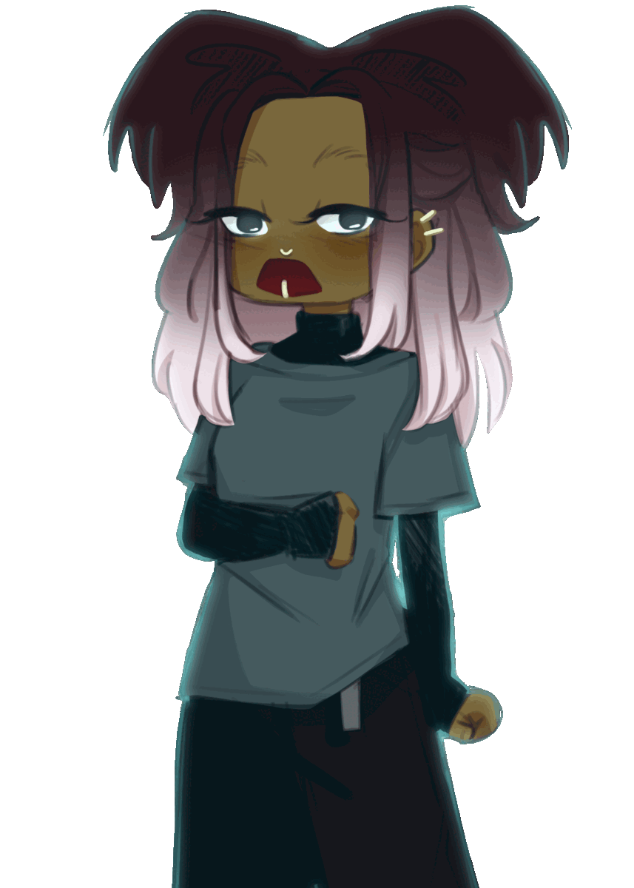
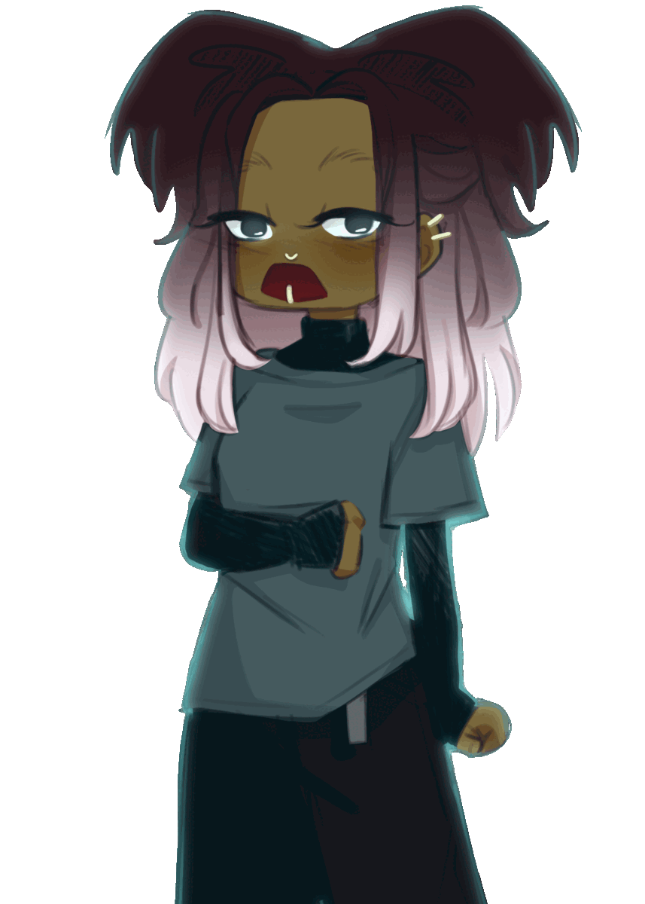
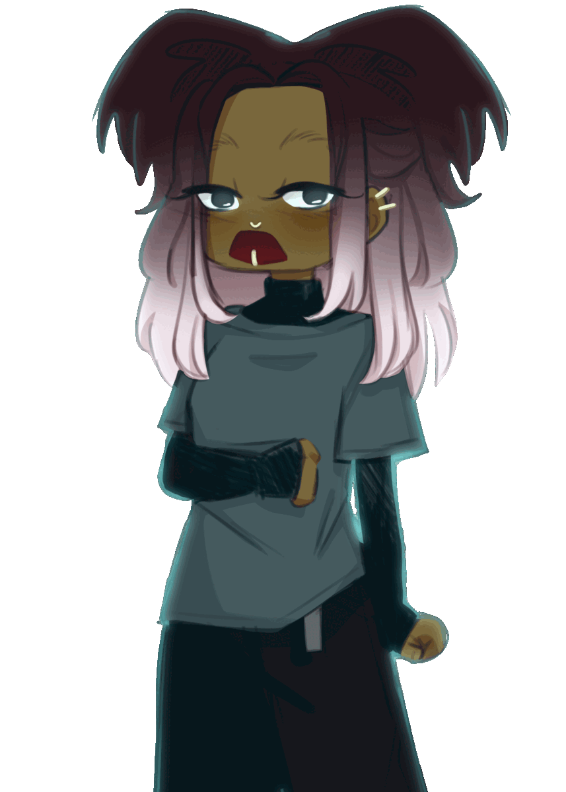

"Really? Are you sure?" Shock written on Deja's face. "You don't have to do this-" Neveah cut her off, "It's ok, I don't mind helping you out." The corners of Deja's lips lifted, a warm smile washing across her face. "Thank you." She mused. "I don't know if we'll be able to find it though..." Though Neveah was happy to help, she doubted it would actualy lead anywhere. I mean, her grave could be anywhere, if it even exists. "That's alright, I just appreciate that you're even willing to help." This caused Neveah to smile, though you couldn't see it under her scarf. "Alright then, I know there has to be a graveyard around here somewhere, lets start there."
